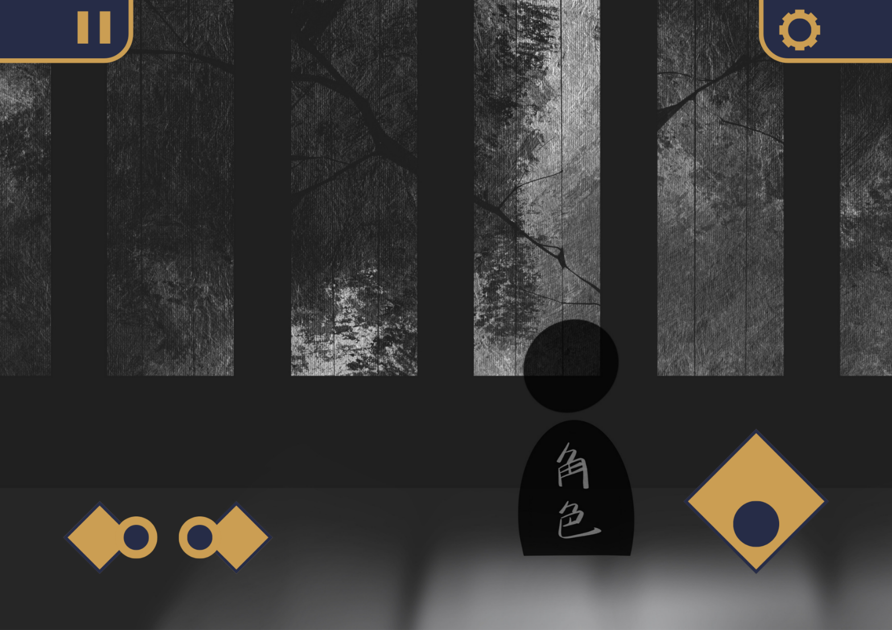
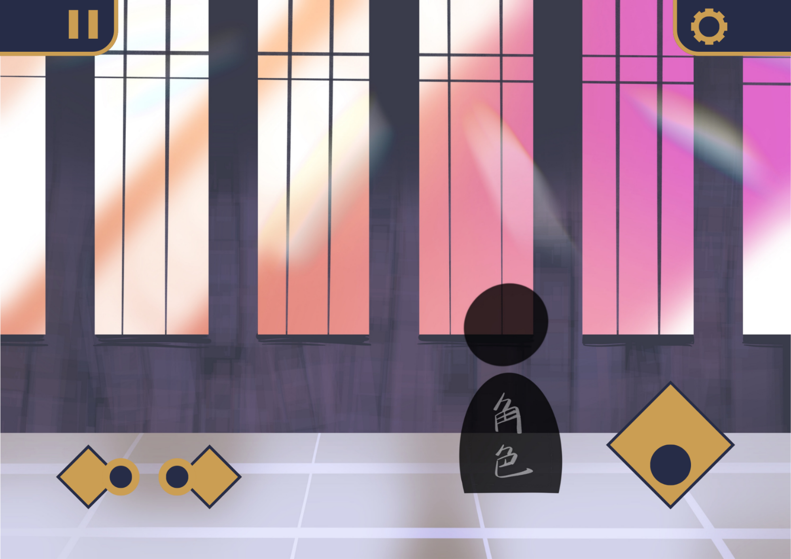

個人遊戲企劃案
在遙遠的未來，世界經歷了一場無名的災變。
那場災害無聲無息，卻將天地萬物的色彩抽離，只留下灰白與寂靜。
山川、城市、森林，甚至人們的記憶都化作模糊的殘影。
玩家將化身為「旅者」——在銀河間漂泊的靈魂，肩負著重拾「世界記憶」的使命。
旅者手中握有能將記憶化為色彩的畫筆，踏上跨越星辰與廢墟的旅途，
尋找失落的色調，重塑被遺忘的世界。
這段旅程不僅是探索外在的廢土，更是一場深入心靈的追尋：
那些記憶的碎片，究竟屬於過去的世界，還是旅者自己？
旅者是一位寡言卻堅定的靈魂。
身披被風霜染白的長斗篷，頸間繫著象徵「連結」的圍巾。
他（她）背著簡陋的包袱，裡頭裝著一管畫筆與少量顏料 ——
那是唯一能讓灰白世界恢復生命的工具。
1.
核心概念
《遺落的色調》是一款以「色彩」為核心主題的幻想探索遊戲。
遊戲將「記憶」作為關鍵要素，結合文明遺跡、自然生態與人類文化，
以視覺化的方式呈現抽象的情感與回憶。
玩家不只是修復世界，更是在重新理解「失落」與「重生」的意義。
2.
遊戲體驗內容
3.
關卡細部內容
主線內容：
每一張地圖代表一個被遺忘的世界片段。
玩家必須尋找散落的「記憶」並解謎，讓該地區恢復原本的色彩。
當色彩完全回歸時，世界將由灰階轉為絢爛，象徵該地區的「重生」。
記憶（Memory）：
以互動解謎的方式呈現，部分關卡需要依照旋律、圖像或文字線索推理。
當謎題被解開，玩家將喚醒一段被塵封的回憶——
這些記憶既屬於世界，也可能與旅者的過去有所牽連。
色彩（Color）：
每一種色彩代表一種情感：
「赤」象徵勇氣、「藍」象徵悲傷、「黃」象徵希望。
玩家在過程中不僅收集顏色，也逐步拼湊出世界的靈魂。
4.
關卡架構預想
|
區域名稱 |
主題色彩 |
主題情感 |
解謎形式 |
特殊互動 |
|
灰燼之都 |
緋紅 |
勇氣 |
光影折射 |
點燃城市燈塔 |
|
遺夢之森 |
青綠 |
思念 |
音樂解謎 |
喚醒沉睡花朵 |
|
星海遺境 |
蔚藍 |
孤獨 |
空間拼圖 |
連結星之碎片 |
5.
附加內容
1.
地圖美術
通關前：
畫面以低飽和度的冷灰色調為主，景物破碎、光線柔弱，營造出荒蕪卻寧靜的氛圍。
細節如殘垣斷壁、枯枝落葉、風中飛散的灰塵，象徵世界的失落。
通關後：
當色彩回歸，畫面將以厚塗筆觸展現生動的層次感。
色彩飽滿而溫暖，建築恢復輪廓、天空映出光影，
宛如畫作在玩家眼前逐步完成。
|
 |
 |
2.
音樂風格
移動端
PC端
-
「當世界失去色彩，你是否願意為它再次描繪往昔的輪廓？」
-
「失色的殘垣斷壁正靜候著你腳步激起的彩色漣漪。」